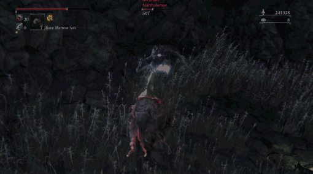
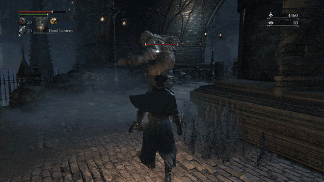

Desenvolvido pela grandiosa Fromsoftware, Bloodborne mostra com primor como contar histórias sem o uso
de
uma narrativa convencional, sendo a principal ferramenta, a direção de arte.
Contexto
Yharnam, outrora uma cidade esquecida, tornou-se o centro das atenções do mundo após a descoberta de
um
líquido milagroso: um sangue capaz de curar todas as enfermidades conhecidas. A promessa de cura
atraiu
peregrinos, estudiosos e desesperados de todas as partes, transformando a cidade em um polo de
medicina
e esperança. Contudo, por trás desse aparente milagre, escondem-se segredos obscuros e horrores
indescritíveis que lentamente emergem das entranhas da cidade.
Direção de Arte: A Cidade que Conta a História
Em Bloodborne, cada rua, prédio e criatura transmite parte da narrativa. A arquitetura gótica, os becos
escuros e as ruas vazias falam sobre a decadência de Yharnam. Não há necessidade de longas falas: o
ambiente é quem guia o jogador.
O uso de cores frias, iluminação sombria e sons distantes cria uma atmosfera opressiva e misteriosa que
se comunica diretamente com o jogador.
Mecânicas que Reforçam a Narrativa


Bloodborne quebra com convenções tradicionais, eliminando escudos e incentivando a agressividade. O
combate rápido, visceral e sangrento não é só mecânico, mas uma extensão da própria ambientação.
A regeneração de vida ao atacar, por exemplo, transmite a ideia de sobrevivência a qualquer custo.
Até as armas transformáveis mostram o quanto adaptação é essencial para quem ousa caçar as feras.
O Horror Cósmico e o Medo do Desconhecido
À medida que o jogador avança, a narrativa de Bloodborne se transforma, indo do horror gótico clássico
ao terror cósmico inspirado na obra de H.P. Lovecraft.
Criaturas incompreensíveis, planos de existência ocultos e segredos esquecidos revelam que os
verdadeiros monstros não são as feras, mas aquilo que a mente humana não pode compreender.
Principais Locais de Yharnam e Além
O Sonho do Caçador
Um refúgio etéreo onde o Caçador repousa e se prepara. Guiado por Gehrman e pela Boneca, é um
espaço
de
descanso e reflexão, mas também um lembrete de que a caçada jamais termina.
Yharnam Central
O coração de Yharnam, onde os primeiros passos do Caçador são dados. Ruas labirínticas,
arquitetura
gótica e uma sensação constante de claustrofobia dominam este espaço.
Catedral e o Bairro da Igreja
O epicentro das experiências com o sangue sagrado, lar da Igreja da Cura. Aqui, os mistérios
sobre a
origem do sangue e sua verdadeira natureza começam a ser revelados.
Antiga Yharnam
Uma parte da cidade consumida pelo fogo, isolada para conter a praga das feras. Caminhar por
essas
ruínas é testemunhar o desespero de uma cidade que sacrificou seus próprios cidadãos.
Floresta Proibida
Uma densa e floresta repleta de armadilhas e bestas selvagens. É o caminho que conecta Yharnam à
antiga Academia de Byrgenwerth.
Academia de Byrgenwerth
Um antigo centro acadêmico onde tudo começou. Foi em Byrgenwerth que os estudiosos descobriram
os
restos
da Grande Cidadela subterrânea e o sangue antigo, desencadeando a tragédia que assolou Yharnam.
Yahar'gul
Yahar'gul, a Vila Invisível
Um local oculto onde cultistas realizam rituais insanos em busca de transcendência. Estruturas
retorcidas e horrores cósmicos revelam a face mais sombria de Yharnam.
O Pesadelo de Mensis
Criado pelos estudiosos da Escola de Mensis, liderados por Micolash, este pesadelo é uma
dimensão
distorcida, cheia de horrores cósmicos. A tentativa desesperada da escola de entrar em contato
com
entidades superiores levou à loucura e à corrupção.
O Pesadelo do Caçador
Uma dimensão onírica onde os caçadores aprisionados vivem e morrem eternamente, presos pela
maldição
do
sangue. Este local reflete o sofrimento e a glória daqueles que dedicaram suas vidas à caçada.
Pthumeru
Uma antiga tumba subterrânea selada sob Yharnam, lar da extinta civilização Pthumeriana. Entre
câmaras esquecidas e rituais profanos, ecoam os lamentos de um povo que buscou os Grandes e foi
consumido por seu poder.
A Figura do Caçador
Sem nome ou passado, o Caçador representa o jogador inserido nessa espiral de loucura.
A sua jornada é marcada não por palavras, mas por sangue, escolhas e descobertas feitas no silêncio das
ruas vazias de Yharnam.
Imersao
Para uma maior imersão ao universo do jogo, onde não há uma explicação clara sobre o caminho, foi
preparado uma silumação das funcionalidades do jogo, mostrando diferentes finais e acontecimentos do
jogo.